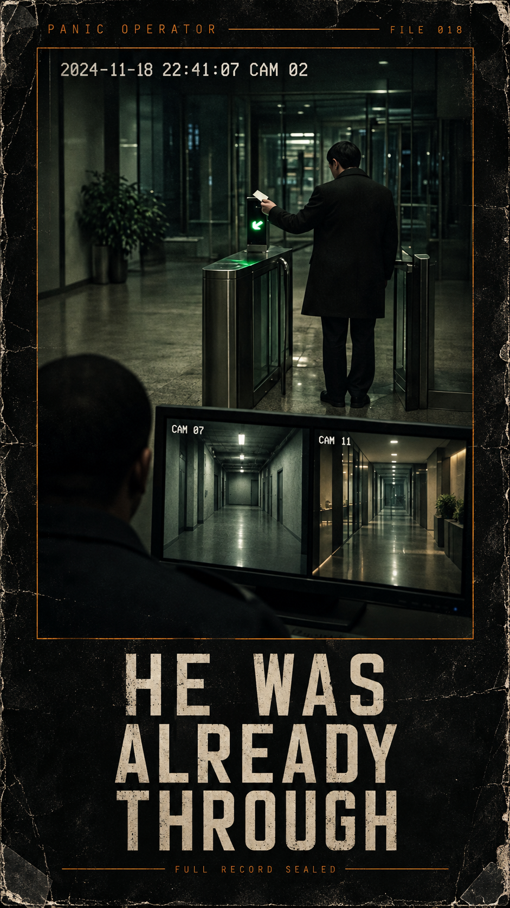
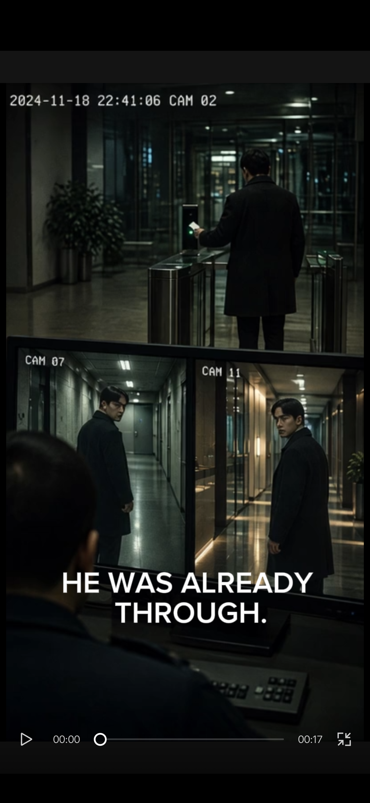
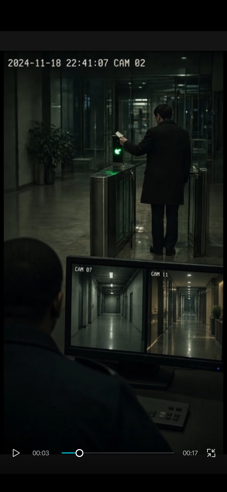

PANIC OPERATOR ARCHIVE
He Was Already Through
Public fragment / FILE 018
This page is the short public fragment: two selected stills and brief operator notes. The video, complete record, full stills, and operator close are for paid members in the sealed tray on Patreon.

Video sealed for paid members. Cover artwork; evidence stills follow.
01 / Case log
The reader accepts a man in a dark coat. Later, he is at the gate again, the reader is red, and two corridor feeds are occupied by matching figures. We retain the views; no continuous movement connects the positions.
02 / Selected evidence

The occupied feeds
Two corridor feeds contain dark-coated figures while another man stands at the reader. The composite view does not establish synchronized physical presence.

An empty interior
The reader is green and both visible corridor feeds are empty. This is the baseline against which the later occupied feeds become difficult to reconcile.
03 / Operator notes
- CAM / PLACE: CAM 02 / office entrance; corridor views on the security monitor.
- TIME: 18 November 2024 on the overlays; camera clocks are not verified.
- ACCESS: green on the first passage, red on the later attempt.
- CONTINUITY: the supplied views do not bridge the return to the gate.
- IDENTITY: matching appearance alone cannot establish the same person.
- OPEN QUESTION: who is still waiting to enter?
- Remaining plates and close: sealed tray.